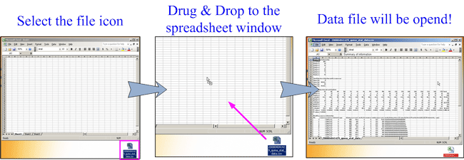

| How to open a CSV file |


| In many case, CSV formatted analysis data file can be opened from Microsoft Excel by double-clicking the file icon. If not, try the "drug & drop" procedure indicated below. | |
| |
|
| Drug & drop the data file icon to the software icon of the MicrosoftExcel or OpenOffice. | |
| |
|
| Open a blank window of the MicrosoftExcel or OpenOffice/StartSuite. Then drug & drop the data file icon to the window. | |
|  | |
| Alternatively, open the data file from the "File" menu -> "Open" sub-menu (change "Files of type" tab to "All" or "Text files"). | |